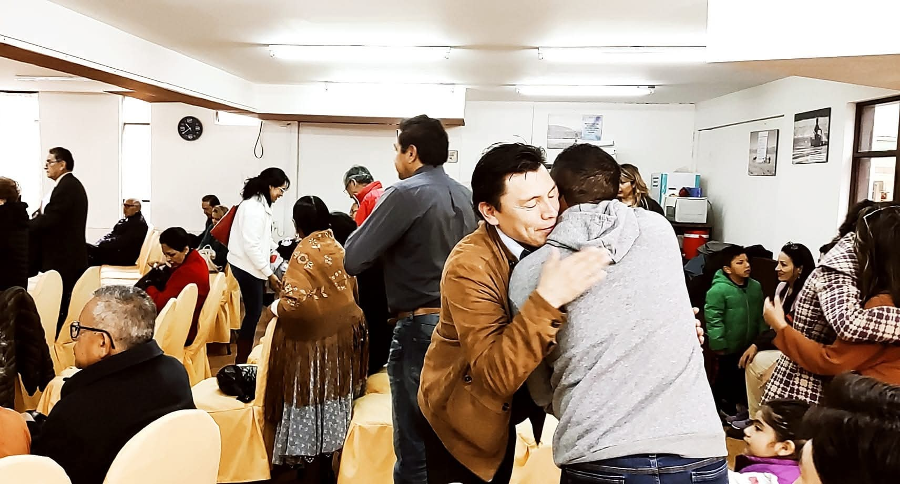

Una comunidad centrada en Cristo y en la restauración de las personas.
En Comunidad Cristiana de Restauración creemos que cada persona tiene valor, propósito y una historia que Dios puede transformar.
Somos una iglesia enfocada en compartir el amor de Jesucristo, acompañar a las familias y caminar juntos en fe, esperanza y restauración.
✝
Nuestra Identidad
Cristo es el centro de todo.
♡
Nuestra Comunidad
Caminamos juntos en amor.
✦
Nuestra Esperanza
Creemos en vidas restauradas.

CCR
Un lugar para pertenecer, crecer y caminar con Dios.
PASTOR PRINCIPAL
Pastor Carlos
Sanabria
El Pastor Carlos Sanabria guía a Comunidad Cristiana de Restauración con un corazón enfocado en Cristo, la Palabra de Dios y la restauración de las personas.
Su deseo es acompañar a cada persona y familia en un camino de fe, esperanza y crecimiento espiritual.
Si estás atravesando un momento difícil, necesitas dirección o deseas que oremos por ti, puedes compartir tu petición con nosotros.
01
Tu petición será recibida con respeto y cuidado.
02
Nuestro equipo pastoral orará por ti.
Formulario
Enviar petición por WhatsApp
Tu generosidad transforma vidas
"Cada uno debe dar según lo que haya decidido en su corazón, no de mala gana ni por obligación, porque Dios ama al que da con alegría." — 2 Corintios 9:7
Gracias a tus diezmos, ofrendas y donaciones, podemos mantener nuestras puertas abiertas y seguir compartiendo el mensaje de restauración.
Cada aporte, sin importar el tamaño o la distancia, hace una gran diferencia.
🇧🇴
Ofrendar desde Bolivia
Escanea este código QR "Simple" desde la aplicación de tu banco (Bisa, BNB, Mercantil, Sol, etc.) para transferir de forma directa y con 0% de comisión.
* Válido para transferencias de monto libre / abierto.
🌍
Apoyo desde el Exterior
Para enviar tu ofrenda fuera de Bolivia evitando altas comisiones, te recomendamos usar aplicaciones seguras como Remitly, Western Union o Wise. Al enviar, elige la opción de "Depósito Bancario Directo" e introduce los datos autorizados:
🏦 Banco: [Nombre del Banco]
👤 Titular Autorizado: [Nombre Completo del Pastor o Líder]
🔢 Número de Cuenta: [Número de Cuenta]
🪙 Tipo de Cuenta: Caja de Ahorros
🪪 Cédula de Identidad (CI): [Número de CI]
* Las agencias internacionales de envío solicitan el número de CI del destinatario para verificar el depósito en destino.
🙏 Transparencia y Confirmación: Si realizas una ofrenda o diezmo por estos medios, puedes enviar el comprobante o avisar directamente a nuestro equipo pastoral al WhatsApp 67131579 para mantener un registro ordenado y transparente. ¡Dios te bendiga!
Ubicación y Contacto
Nos encantaría conocerte y darte la bienvenida a CCR.
📍
Ubicación
Comunidad Cristiana de Restauración
📍
Achumani Calle 11 #92,
casi esq. Alexander.
La Paz, Bolivia